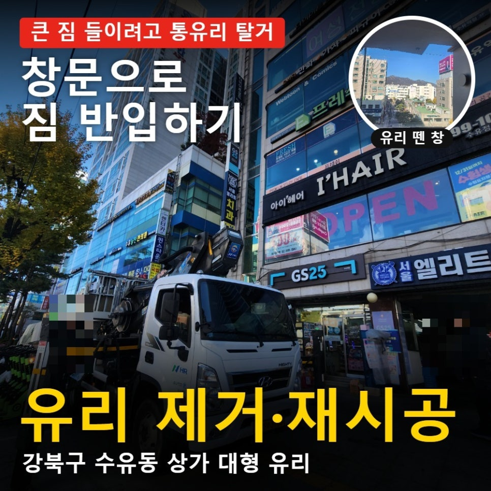
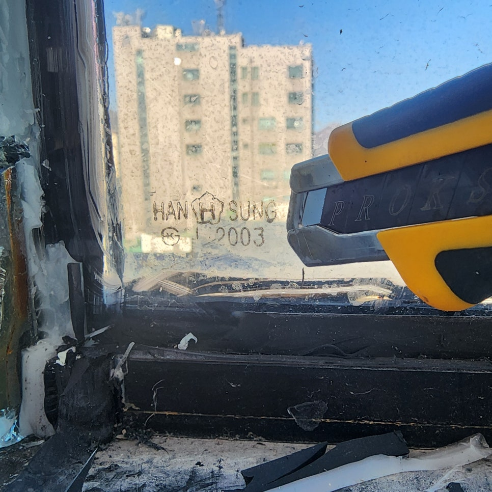
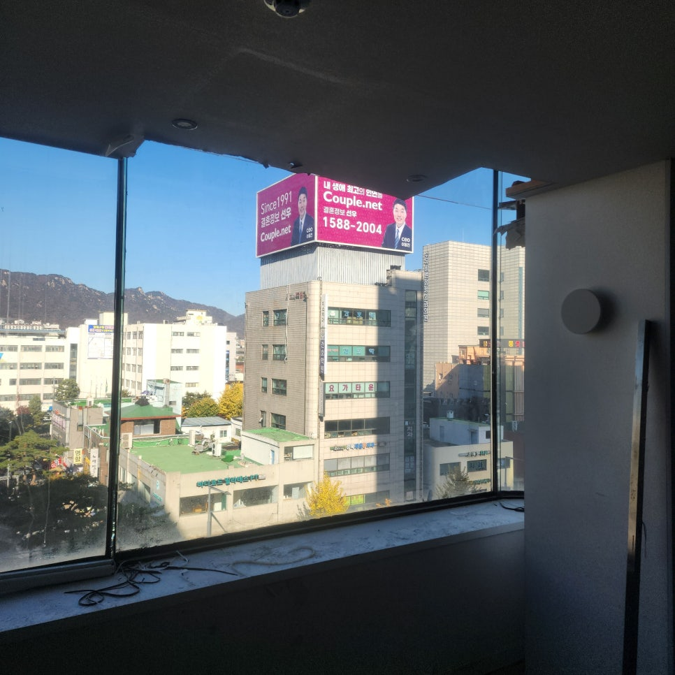

통유리창은 한 장이 커서, 문으로 못 들어가는 자재가 있을 때 잠시 떼어 통로로 쓰기도 합니다. 이번 서울 강북구 상가 위층 현장이 그랬습니다. 가로 약 6000, 세로 약 3000의 24T 이중유리를 장비로 받아 내렸고, 목공 자재가 다 들어간 뒤 같은 자리에 다시 맞춰 넣었습니다.
한눈에 보기
| 작업 | 통유리창 분리 후 복구 |
|---|---|
| 지역 | 서울 강북구 수유동 |
| 장소 | 대로변 상가 건물 위층 |
| 유리 | 24T 이중유리(페어유리), 약 6000×3000 |
| 장비 | 크레인, 유리 흡착기 |
| 목적 | 목공 작업 자재 반입 |




큰 통유리창은 왜 장비가 필요한가요?
가로 6m 정도 되는 유리는 계단이나 엘리베이터로 옮길 수 없습니다. 그래서 처음부터 크레인을 같이 불러 건물 밖에서 받아 내리는 방식으로 진행했습니다.
통창을 떼고 다시 끼우는 순서
- 유리 테두리를 붙잡고 있는 실링을 칼날로 먼저 끊었습니다. 실링이 남은 채로 힘을 주면 모서리가 틀에 걸려 깨질 수 있어, 다 끊긴 것을 확인한 뒤에만 유리를 움직였습니다.
- 잡을 곳이 없는 유리 위·아래·옆에 흡착기를 나눠 붙여 무게가 쏠리지 않게 했고, 들기 전에 하나씩 다시 눌러 확인했습니다.
- 건물 앞 도로에 세운 크레인으로 유리를 받아 내렸습니다. 사람이 많이 지나는 상가 앞이라 아래쪽 통행부터 정리했습니다.
- 내린 유리는 바닥에 바로 두지 않고 받침목 위에 세워 모서리를 보호했습니다.
- 유리가 빠진 창으로 목공 자재를 들였습니다.
- 반입이 끝난 뒤 유리를 원래 자리에 맞춰 다시 끼우고, 빗물이 들지 않도록 테두리를 다시 막았습니다.
통유리창 분리 비용은 어떻게 나오나요?
유리를 새로 사는 작업이 아니라서, 견적은 작업 인원별 인건비와 크레인 비용으로 정해집니다.
유리가 크고 층이 높을수록 필요한 인원과 크레인 규모가 달라져 현장마다 금액이 다릅니다.
자주 묻는 질문
- Q. 공사 중 큰 자재를 통창으로 들일 수 있나요?
- 통유리창을 잠시 떼어 내면 가능합니다. 목공 날짜를 잡기 전에 유리 작업 날짜부터 맞춰 두시는 것이 좋습니다.
- Q. 뗐던 이중유리를 다시 써도 되나요?
- 깨지지 않게 떼어 받침목 위에 보관했다면 같은 유리를 다시 시공할 수 있습니다. 이 현장도 같은 유리를 다시 끼웠습니다.